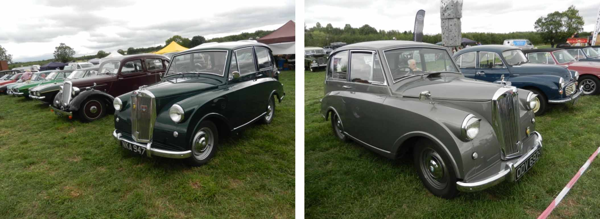

<link href="{{ site.baseurl }}/events/article.css" rel="stylesheet" type="text/css">
<main>
    <article>
        <ol id="breadcrumb">
            <li>
                <a href="{{ site.baseurl }}/">Home</a>
            </li>
            <li>
                <a href="{{ site.baseurl }}/events">Events</a>
            </li>
            <li>
                <a href="{{ site.baseurl }}/events/local">Local</a>
            </li>
            <li>Ibstock Country Fair 2018</li>
        </ol>
        <div id="content">
            <h1>Ibstock Country Fair</h1>
            <h2>19<sup>th</sup> August 2018</h2>
            <h3>Report by Paul Burgess</h3>
            
            <p>Paul Burgess and John Castle took their Mayflowers to Ibstock for the village’s annual Country Fair. About 55 classic cars were in attendance despite the iffy weather. John is hoping he has cured his ignition problems so he can get on to his list of “to dos” over the winter.</p>
        </div>
    </article>
    <aside>
        <h2>Members’ cars in attendance</h2>
        <ul class="disableListStyles">
            <li>
                <h3>Paul Burgess</h3>
                <div>
                    <div class="numberPlateMarker">NKA 947</div>
                </div>
            </li>
            <li>
                <h3>John Castle</h3>
                <div>
                    <div class="numberPlateMarker">ODV 692</div>
                </div>
            </li>
        </ul>
    </aside>
</main>
